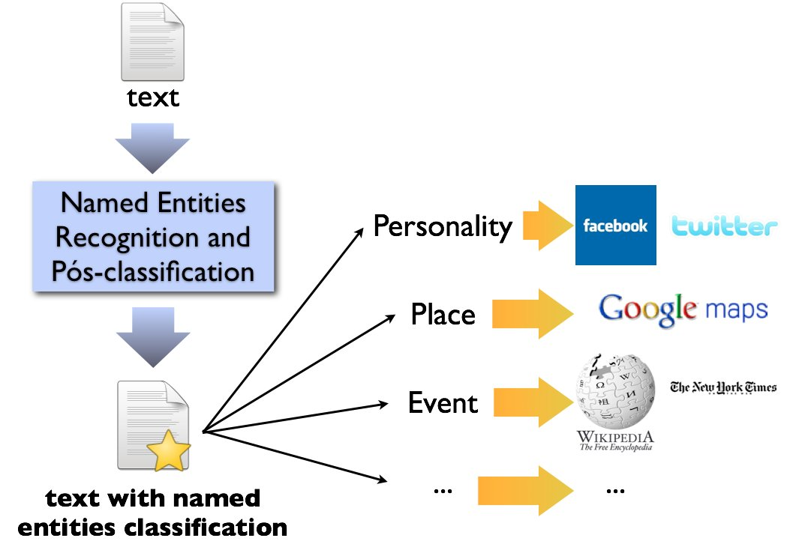
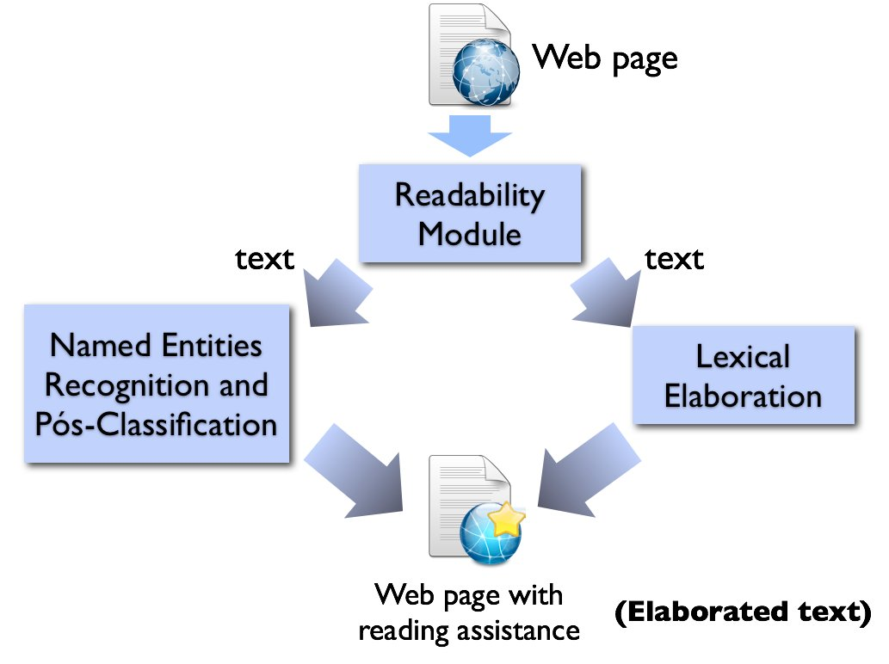
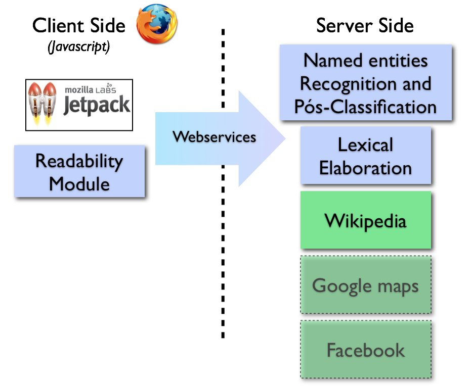

Description
In order to deliver this functionality we make use of three distinct textual processing modules:
- Readability: some of the textual processing techniques that we use require the establishment of concrete relations among the words that belong to a phrase in the text (syntactic analysis). So that we can identify phrases inside any page that is being presented to users we will use the Readability application implemented by the Arc90. The Readability application selects a specific element inside the page that contains the "main" content, and in this "main" content it becomes easier to identify phrases.
- Named Entities recognition: next we need to identify and present users with informations about named entities in a text. As an example we can look into the expression "Luis Inácio Lula da Silva" which is the name of the President of Brazil. This information is not necessarily available on the text, but is implicit in the expression. In order to make this implicit information available to users, we make use of Rembrandt to both label the expression above with “person” and also direct this expression to its correspondent link in the Wikipedia. It is important to acknowledge that the Named Entities Recognition methods identify the class of the named entities present in the text. And by doing that we can extendt the Educational Facilita prototype to search for references about the named entity identified in other resources available on the Web, in the future. For example: if we find the named entity New York, the named entity recognition system would identify it as being of the class "Place" or "Location". With that information we could look for a reference of the named entity found in the Google Maps and present it to the user. Another example can be made with the named entity "President Obama". The named entity recognition system would identify it as being of class "person" and by doing that Educational Facilita interpret it and look for President Obama's reference in the Facebook or on Twitter. This kind of operation or behavior is illustrated on the following Figure. 
- Lexical Elaboration: finally the last module evaluates the complexity of each word separately. Accordingly to the result of this evaluation Educational Facilita will present the user with synonyms for this word that might be more easily understood by users. We already implemented a very similar functionality in the PorSimples Project and will probably reuse it in the Jetpack platform.
The 3 modules would work as presented in the following Figure. First we would apply the readability module on the Web page to identify the main text in it. Next we would run simultaneouly the Named Entity Recognition module and the Lexical Elaboration modules having as input the main text identified by the Readability module. Next we integrate both responses from the Named Entity Recognition and Lexical Elaboration module into a unique HTML code. Finally we insert the unique HTML code in the page which activated the Educational Facilita resource.
It is important to acknowledge that the Educational Facilita will be implemented, initially, just for Brazilian Portuguese. Given that the applications and modules already implemented are directed to this language. However, the migration of Educational Facilita to other languages just require the substitution of the presented modules by other modules with the same functionality for other languages. Following the same architecture.
Now, going for the technological details of the proposed solution for Educational Facilita. Each of the three modules is implemented in a different environment, in a way that they not necessarily can be implemented in Javascript or in the Jetpack Platform. For example, the Lexical Elaboration module was developed in clear php, while the Named Entities recognition operates over groove in Java language. This kind of characteristics among the modules, leads us in the use of webservices to deliver these functionality together in the Educational Facilita. More specifically we will probably use REST to integrate these functionalities.
This way, in the technological point of view, the architecture should work like illustrated in the following figure.
